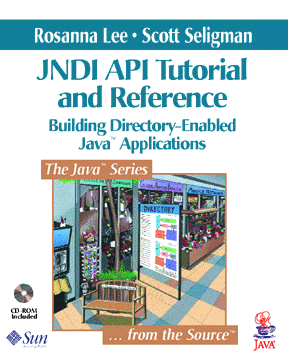

The JNDI
API Tutorial
and Reference

Order it today from Amazon.com.
To find other books
from the Java Software
team, see
The Java Series.
|
This is the online version of
the The JNDI Tutorial.
It is modeled after
The Java Tutorial
by Mary Campione and Kathy Walrath.
It is organized into trails --
groups of lessons on a particular subject.
If you've never used the Java Tutorial or this tutorial before,
you can read a quick note describing
how to use this tutorial.
|
Trail
Map |
A list of trails and the lessons within them. |
|
Contents |
Scan the master table of contents
to get an overview of every trail.
|
|
Download |
Feel free to download the tutorial and make it available on a
local network. Please do not publicly mirror it to
the Web.
If you find a public mirror, please
send us the URL. |
|
Feedback |
Our goal is to keep this tutorial as up-to-date as possible
with the latest releases of JNDI-related software.
If you find an error or some details lacking in the tutorial, please
mail us
the relevant information. We will try to incorporate
fixes to the errors in the next release of the tutorial.
|
|
This tutorial reflects the version
of the JNDI and the LDAP service provider that are in the
Java 2 SDK, Standard Edition, v 1.4.2, and
version 1.2 beta 3 of the File System service provider.
All of the material in The JNDI Tutorial
is copyright-protected
and may not be published in other works without express written
permission from Sun Microsystems. |
 |
|